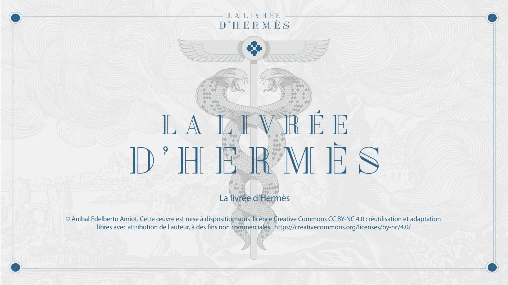
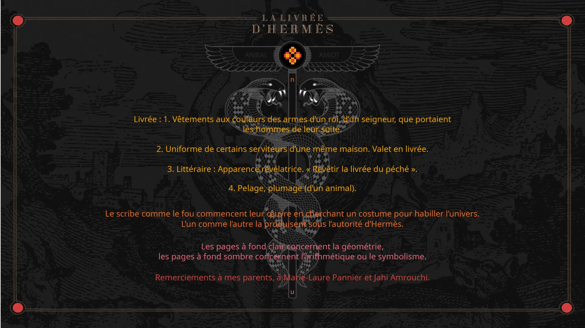
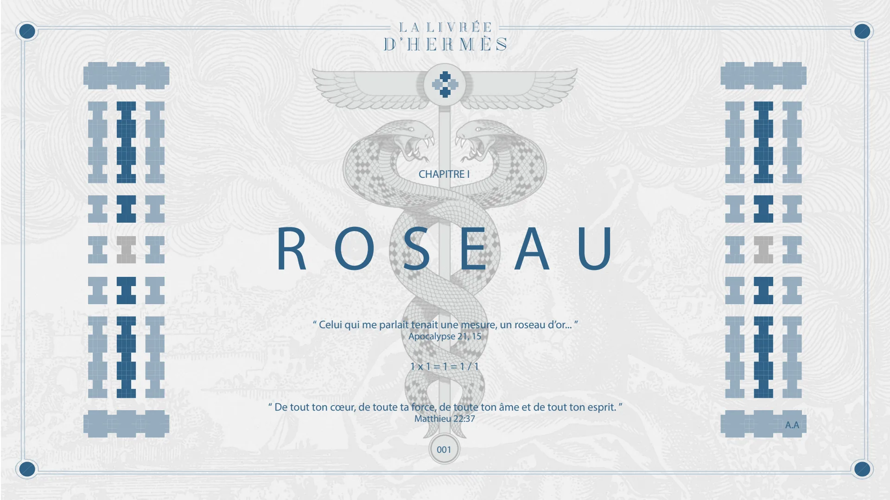
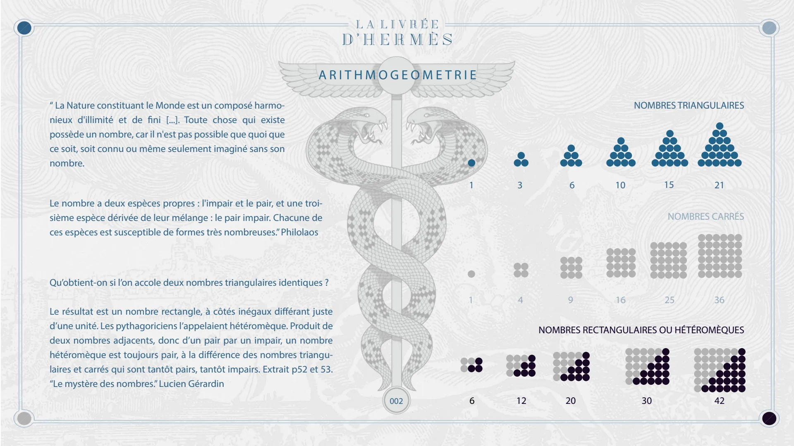
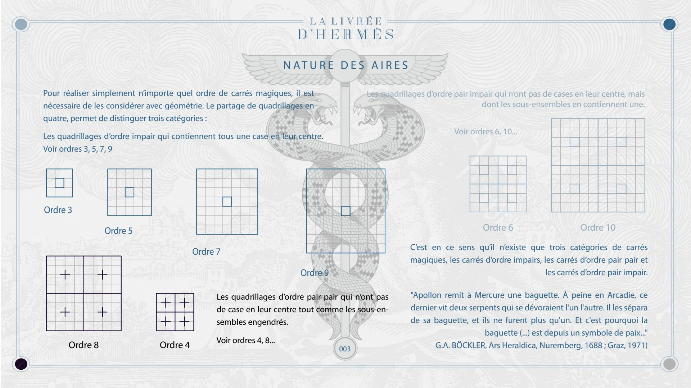
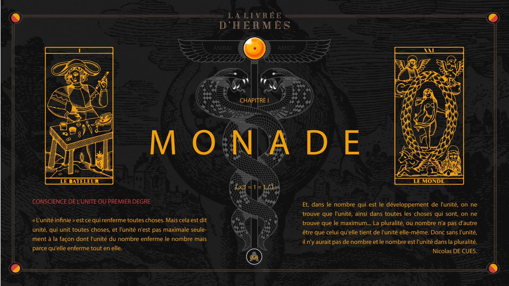
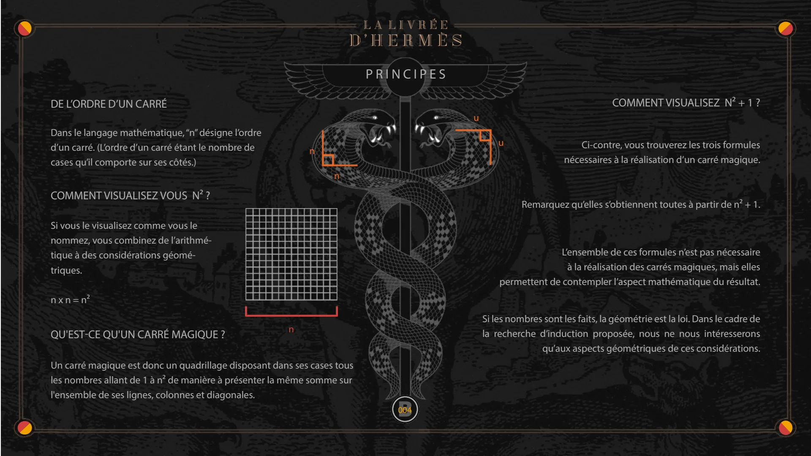
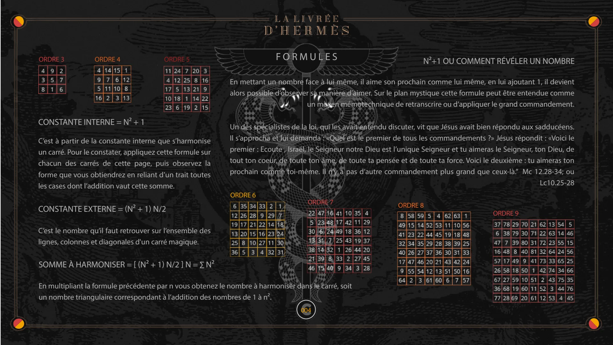

Chapitre I — Roseau, Monade
Pages 000A à 004C du livre · chapitre 1 sur 7
Chapitre I de La Livrée d'Hermès : Roseau et Monade. L'arithmogéométrie des nombres figurés, la nature des aires et les principes du carré magique : n², n² + 1, constantes interne et externe.

La livrée d’Hermès
© Anibal Edelberto Amiot. Cette œuvre est mise à disposition sous licence Creative Commons CC BY-NC 4.0 : réutilisation et adaptation libres avec attribution de l'auteur, à des fins non commerciales. https://creativecommons.org/licenses/by-nc/4.0/

n
ANIBAL
AMIOT
Livrée : 1. Vêtements aux couleurs des armes d’un roi, d’un seigneur, que portaient les hommes de leur suite. 2. Uniforme de certains serviteurs d’une même maison. Valet en livrée. 3. Littéraire : Apparence révélatrice. « Revêtir la livrée du péché ». 4. Pelage, plumage (d’un animal).
Le scribe comme le fou commencent leur œuvre en cherchant un costume pour habiller l’univers. L’un comme l’autre la produisent sous l’autorité d’Hermès.
Les pages à fond clair concernent la géométrie, les pages à fond sombre concernent l’arithmétique ou le symbolisme.
Remerciements à mes parents, à Marie-Laure Pannier et Jahi Amrouchi.
u

CHAPITRE I
ROSEAU
“ Celui qui me parlait tenait une mesure, un roseau d’or... ” Apocalypse 21, 15
1 x 1 = 1 = 1 / 1
“ De tout ton cœur, de toute ta force, de toute ton âme et de tout ton esprit. ” Matthieu 22:37
A.A 001

ARITHMOGEOMETRIE
“ La Nature constituant le Monde est un composé harmonieux d'illimité et de fini [...]. Toute chose qui existe possède un nombre, car il n'est pas possible que quoi que ce soit, soit connu ou même seulement imaginé sans son nombre.
NOMBRES TRIANGULAIRES
Le nombre a deux espèces propres : l'impair et le pair, et une troisième espèce dérivée de leur mélange : le pair impair. Chacune de ces espèces est susceptible de formes très nombreuses.” Philolaos
1 3 6 10 15 21
NOMBRES CARRÉS
Qu’obtient-on si l’on accole deux nombres triangulaires identiques ?
Le résultat est un nombre rectangle, à côtés inégaux différant juste d’une unité. Les pythagoriciens l’appelaient hétéromèque. Produit de deux nombres adjacents, donc d’un pair par un impair, un nombre hétéromèque est toujours pair, à la différence des nombres triangulaires et carrés qui sont tantôt pairs, tantôt impairs. Extrait p52 et 53. “Le mystère des nombres.” Lucien Gérardin
1 4 9 16 25 36
NOMBRES RECTANGULAIRES OU HÉTÉROMÈQUES
002 6 12 20 30 42

NATURE DES AIRES
Pour réaliser simplement n’importe quel ordre de carrés magiques, il est nécessaire de les considérer avec géométrie. Le partage de quadrillages en quatre, permet de distinguer trois catégories : Les quadrillages d’ordre impair qui contiennent tous une case en leur centre. Voir ordres 3, 5, 7, 9
Les quadrillages d’ordre pair impair qui n’ont pas de cases en leur centre, mais dont les sous-ensembles en contiennent une.
Voir ordres 6, 10...
Ordre 3 Ordre 8 Ordre 5 Ordre 4 Ordre 7 Ordre 9
Les quadrillages d’ordre pair pair qui n’ont pas de case en leur centre tout comme les sous-ensembles engendrés. Voir ordres 4, 8...
003 Ordre 6 Ordre 10
C’est en ce sens qu’il n’existe que trois catégories de carrés magiques, les carrés d’ordre impairs, les carrés d’ordre pair pair et les carrés d’ordre pair impair.
"Apollon remit à Mercure une baguette. À peine en Arcadie, ce dernier vit deux serpents qui se dévoraient l'un l'autre. Il les sépara de sa baguette, et ils ne furent plus qu'un. Et c'est pourquoi la baguette (...) est depuis un symbole de paix..." G.A. BÖCKLER, Ars Heraldica, Nuremberg, 1688 ; Graz, 1971)

CHAPITRE I
MONADE
1 x 1 = 1 = 1 / 1
CONSCIENCE DE L’UNITE OU PREMIER DEGRE
« L’unité infinie » est ce qui renferme toutes choses. Mais cela est dit unité, qui unit toutes choses, et l'unité n'est pas maximale seulement à la façon dont l'unité du nombre enferme le nombre mais parce qu'elle enferme tout en elle.
ANIBAL
A 004
AMIOT
Et, dans le nombre qui est le développement de l'unité, on ne trouve que l'unité, ainsi dans toutes les choses qui sont, on ne trouve que le maximum... La pluralité, ou nombre n'a pas d'autre être que celui qu'elle tient de l'unité elle-même. Donc sans l'unité, il n'y aurait pas de nombre et le nombre est l'unité dans la pluralité. Nicolas DE CUES.

PRINCIPES
DE L’ORDRE D’UN CARRÉ
Dans le langage mathématique, “n” désigne l’ordre d’un carré. (L’ordre d’un carré étant le nombre de cases qu’il comporte sur ses côtés.)
n n
COMMENT VISUALISEZ VOUS N² ?
Si vous le visualisez comme vous le nommez, vous combinez de l’arithmétique à des considérations géométriques.
n x n = n²
QU'EST-CE QU'UN CARRÉ MAGIQUE ?
n
Un carré magique est donc un quadrillage disposant dans ses cases tous les nombres allant de 1 à n² de manière à présenter la même somme sur l'ensemble de ses lignes, colonnes et diagonales.
B n n
COMMENT VISUALISEZ N² + 1 ?
Ci-contre, vous trouverez les trois formules nécessaires à la réalisation d’un carré magique.
Remarquez qu’elles s’obtiennent toutes à partir de n² + 1.
L’ensemble de ces formules n’est pas nécessaire à la réalisation des carrés magiques, mais elles permettent de contempler l’aspect mathématique du résultat.
Si les nombres sont les faits, la géométrie est la loi. Dans le cadre de la recherche d’induction proposée, nous ne nous intéresserons qu’aux aspects géométriques de ces considérations.
004

FORMULES
ORDRE 3
ORDRE 4
ORDRE 5
CONSTANTE INTERNE = N² + 1
C’est à partir de la constante interne que s’harmonise un carré. Pour le constater, appliquez cette formule sur chacun des carrés de cette page, puis observez la forme que vous obtiendrez en reliant d’un trait toutes les cases dont l’addition vaut cette somme.
CONSTANTE EXTERNE = (N² + 1) N/2
C’est le nombre qu’il faut retrouver sur l’ensemble des lignes, colonnes et diagonales d'un carré magique.
SOMME À HARMONISER = [ (N² + 1) N/2 ] N = ∑ N²
En multipliant la formule précédente par n vous obtenez le nombre à harmoniser dans le carré, soit un nombre triangulaire correspondant à l’addition des nombres de 1 à n².
N²+1 OU COMMENT RÉVÉLER UN NOMBRE
En mettant un nombre face à lui même, il aime son prochain comme lui même, en lui ajoutant 1, il devient alors possible d’observer sa manière d’aimer. Sur le plan mystique cette formule peut être entendue comme un moyen mémotechnique de retranscrire ou d’appliquer le grand commandement.
Un des spécialistes de la loi, qui les avait entendu discuter, vit que Jésus avait bien répondu aux sadducéens. Il s’approcha et lui demanda : «Quel est le premier de tous les commandements ?» Jésus répondit : «Voici le premier : Ecoute , Israël, le Seigneur notre Dieu est l’unique Seigneur et tu aimeras le Seigneur, ton Dieu, de tout ton coeur, de toute ton âme, de toute ta pensée et de toute ta force. Voici le deuxième : tu aimeras ton prochain comme toi-même. Il n’y a pas d’autre commandement plus grand que ceux-là.” Mc 12.28-34; ou Lc10.25-28
ORDRE 6
ORDRE 7
C
ORDRE 8
ORDRE 9
004
© Anibal Edelberto Amiot. CC BY-NC 4.0 — creativecommons.org/licenses/by-nc/4.0 · DOI 10.5281/zenodo.22722485